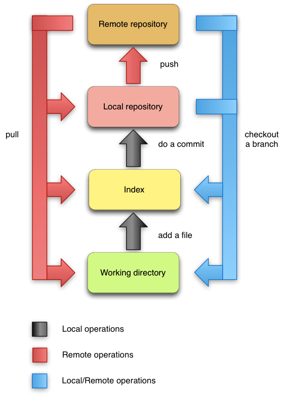

Git Structure
Git, as said before, is a distributed VCS. It means that each user has a mirror of the repository (local repository) and in the case of Git, there is no need for a central server: each user is able to fetch or push updates from other any other user repository (remote repository). Git is divided mainly in three components: the working directory, the index, and the repository. The connection between these components can be seen in the next figure. Local and remote repository have the same internal structure. What is a local repository for an user is a remote repository for another user.
 Figure 2
The Working Directory
The working directory is basically a subset of a file system that contains the files of the project you are currently working on. These files can be the current files, files retrieved from an old snapshot or even files that are not being tracked. When retrieving an older snapshot of the project, the working directory is updated to reflect the project in that state. The untracked files in the working directory are just ignored, unless there is a conflict when retrieving files from an older snapshot.
When a user starts a repository, all the files are untracked. When a new file is created it will be untracked. So, how does Git know which files are tracked or not? That is the role of index which we present next.
The Index
The index is something in between the working directory and the repository. When a file is created if the user wants that file to be on the next commit, it has to be on index. Even if the user just modifies a file and the user wants that change to be reflected on the next commit, it must be added to index, otherwise, what will be committed is the older version of the file. So, basically the index contains all the files that will be in the next commit.